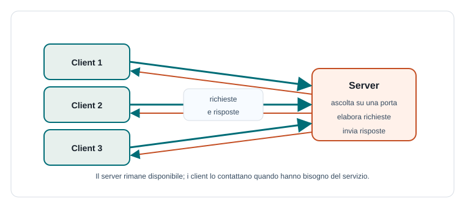

Capitoletto 1
Modello client-server
Molte applicazioni di rete si basano su un'idea semplice: un programma richiede un servizio e un altro programma lo fornisce. Il primo è il client, il secondo è il server.
Obiettivi della lezione
- Distinguere client e server in una comunicazione di rete.
- Capire il ciclo richiesta-risposta.
- Collegare indirizzi IP, porte e servizi.
- Descrivere come un server gestisce più client.
- Confrontare client-server e peer-to-peer.
Client e server
Il client è il programma che avvia la comunicazione perché ha bisogno di un servizio: una pagina web, un file, una ricerca, un dato del registro elettronico. Il server resta in ascolto e risponde alle richieste che arrivano.
I ruoli non dipendono dal tipo di computer. Un portatile può eseguire un server locale, e una macchina potente può comportarsi da client verso un altro servizio. Ciò che conta è il ruolo nella comunicazione.

Richiesta e risposta
La comunicazione client-server segue spesso un ciclo: il client prepara una richiesta, la invia, il server la interpreta, esegue un'elaborazione e restituisce una risposta. Nel web, per esempio, il browser invia una richiesta HTTP e il server risponde con HTML, CSS, immagini, JSON o codici di errore.
Client: vorrei la pagina /materie/tpsit.html
Server: controllo se esiste e se puoi leggerla
Server: invio contenuto o errore
Client: visualizzo il risultato all'utenteIndirizzi IP, porte e servizi
Per raggiungere un server bisogna sapere dove si trova e quale servizio usare. L'indirizzo IP identifica un dispositivo nella rete; la porta identifica un servizio in ascolto su quel dispositivo.
| Elemento | Funzione | Esempio |
|---|---|---|
| Indirizzo IP | Indica la macchina da raggiungere. | 192.168.1.20 |
| Porta | Indica il servizio sulla macchina. | 80 per HTTP, 443 per HTTPS. |
| Protocollo | Definisce le regole dello scambio. | HTTP, FTP, SMTP, DNS. |
| URL | Rende leggibile l'indirizzo di una risorsa. | https://scuola.it/orario |
Server concorrente
Un server reale deve gestire più client. Se elaborasse una richiesta alla volta, un client lento potrebbe bloccare tutti gli altri. Per questo i server usano concorrenza, thread, processi, code di richieste o modelli asincroni.
La concorrenza lato server va progettata con attenzione: più richieste possono modificare gli stessi dati, aprire file, usare connessioni al database o consumare memoria. Per questo la programmazione di rete è collegata alla programmazione concorrente.
Stato della comunicazione
Un servizio è stateless quando ogni richiesta contiene tutto ciò che serve per essere elaborata. È stateful quando il server mantiene informazioni sulla conversazione o sull'utente tra una richiesta e l'altra.
| Tipo | Caratteristica | Esempio |
|---|---|---|
| Stateless | Ogni richiesta è indipendente. | Richiesta di una pagina pubblica. |
| Stateful | Il sistema conserva uno stato della sessione. | Carrello di un e-commerce o login utente. |
Client-server e peer-to-peer
Nel modello client-server i ruoli sono distinti: il server offre servizi, i client li usano. Nel modello peer-to-peer i nodi possono comportarsi sia da client sia da server, condividendo direttamente risorse tra loro.
| Modello | Vantaggio | Limite |
|---|---|---|
| Client-server | Controllo centralizzato, gestione chiara, sicurezza più semplice. | Il server può diventare un punto critico. |
| Peer-to-peer | Distribuisce risorse e carico tra nodi. | Coordinamento e sicurezza più complessi. |
Esempio guidato: registro di classe
- Il browser del docente è il client.
- Il server del registro riceve la richiesta di inserire un voto.
- Il server controlla autenticazione e autorizzazione.
- Il server salva il voto nel database.
- Il client riceve una risposta: operazione riuscita o errore.
Esercizi guidati
- Individua client e server quando apri una pagina web.
- Spiega perché un server deve ascoltare su una porta.
- Descrivi un servizio stateful e uno stateless.
- Scrivi una sequenza richiesta-risposta per una prenotazione del laboratorio.
Domande con risposta semplice
Il server è sempre un computer speciale?
No. Un server è un programma che offre un servizio. Può girare su un computer dedicato, su un portatile o su una macchina virtuale.
A che cosa serve una porta?
Serve a distinguere i servizi attivi sulla stessa macchina. L'IP identifica il dispositivo, la porta identifica il servizio.
Perché un server usa la concorrenza?
Per gestire più client senza bloccare tutti quando una richiesta è lenta o richiede attesa.
Per ripassare
Memorizza la frase: il client chiede, il server risponde. Poi aggiungi i dettagli tecnici: IP per trovare la macchina, porta per trovare il servizio, protocollo per capire i messaggi.